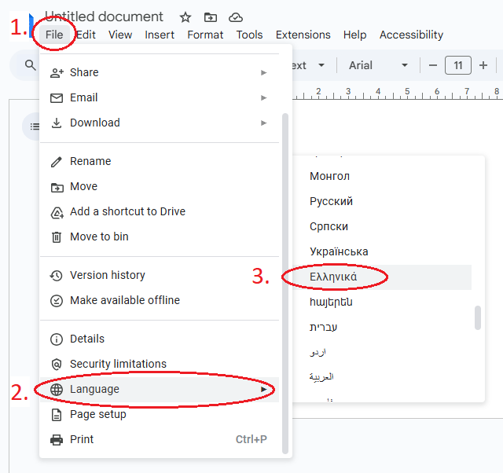
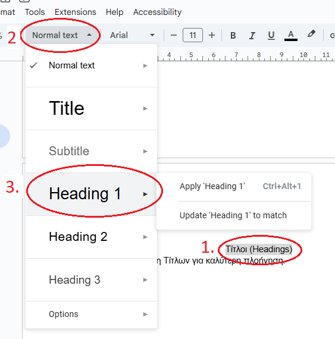
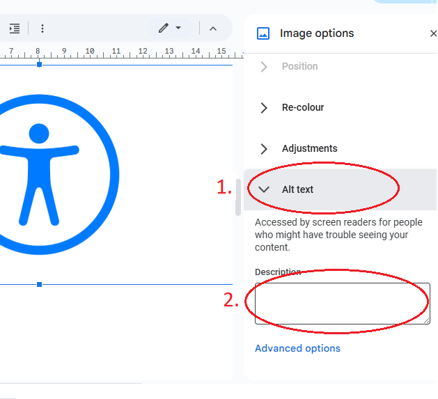
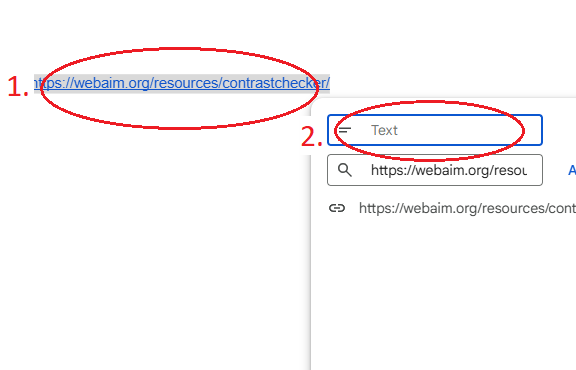

Οδηγίες Δημιουργίας Προσβάσιμου PDF
στο Google Docs
Γλώσσα Αρχείου
Αλλαγή γλώσσας αρχείου για σωστή χρήση Screen Reader.
Η χρήση της σωστής γλώσσας ανάλογα με το κείμενο του αρχείου είναι απαραίτητη για τη σωστή χρήση Screen Reader (Αναγνώστη Οθόνης).
Οδηγείες Αλλαγής Γλώσσας
- Για Windows πατήστε
Alt + Shift + F για να ανοίξει το μενού File. - Πλοηγηθείτε στην επιλογή Language, και επιλέξτε τη σωστή γλώσσα.
- Για Mac πατήστε
Control + Option + F για να ανοίξει το μενού File. - Πλοηγηθείτε στην επιλογή Language, και επιλέξτε τη σωστή γλώσσα.
Τίτλοι (Headings)
Σωστή μορφοποίηση Τίτλων για καλύτερη πλοήγηση με το Πληκτρολογιο.
Χρησιμοποιήστε Heading Tags και προσθέστε αρίθμηση στους τίτλους αν χρειάζεται για πιο σωστή πλοήγηση.
Μη χρησιμοποιείτε Headings για στυλιστικούς λόγους, αλλά μόνο για λόγους δομής.
Οδηγείες Μορφοποίησης Τίτλων
- Επιλέξτε το Τίτλο.
- Για Windows πατήστε
Ctrl + Alt + 1 εως 6 ανάλογα το επίπεδο Τίτλου. - Για Mac πατήστε
Cmd + Option + 1 εως 6 ανάλογα το επίπεδο Τίτλου.
Alternative Text (Εναλλακτικό Κείμενο)
Χρήση Εναλλακτικού Κειμένου για Εικόνες μέσα στο αρχείο.
Η ανάγνωση εικόνων από Screen Readers (Αναγνώστες Οθόνης) δεν είναι δυνατή χωρίς τη χρήση Alternative Text (Εναλλακτικού Κειμένου).
Το Εναλλακτικό Κείμενο πρέπει να περιγράφει το περιεχόμενο της εικόνας με όσο λιγότερες λέξεις γίνεται.
Καλό είναι οι διακοσμητικές εικόνες που δεν έχουν κάποια χρησιμότητα στο αρχείο να μην έχουν Alternative Text (Εναλλακτικό Κείμενο), έτσι ώστε οι χρήστες των Screen Readers (Αναγνώστες Οθόνης) να μην χάνουν χρόνο σε άχρηστες πληροφορίες.
Οδηγείες Πρόσθεσης Εναλλακτικού Κειμένου
- Επιλέξτε την Εικόνα.
- Για Windows πατήστε
Ctrl + Alt + Υ , και πληκτρολογήστε το Εναλλακτικό Κείμενο. - Για Mac πατήστε
Cmd + Option + Υ , και πληκτρολογήστε το Εναλλακτικό Κείμενο.
Σύνδεσμοι (Links)
Σωστός Χαρακτηρισμός Συνδέσμων για σωστή χρήση Screen Reader.
Οι Σύνδεσμοι πρέπει πάντα να χαρακτηρίζουν έμπιστα το προορισμό τους, έτσι ώστε οι χρήστες με Screen Readers (Αναγνώστες Οθόνης) να ξέρουν σε τι οδηγεί ο Σύνδεσμος.
Οδηγείες Χαρακτηρισμού Συνδέσμων
- Επιλέξτε τον Σύνδεσμο.
- Για Windows πατήστε
Ctrl + k , και πληκτρολογήστε το Χαρακτηρισμό του Συνδέσμου. - Για Mac πατήστε
Cmd + k , και πληκτρολογήστε το Χαρακτηρισμό του Συνδέσμου.
Color Contrast (Αντίθεση Χρωμάτων)
Χρήση σωστών αναλογιών αντίθεσης χρωμάτων για ευανάγνωστα αρχεία.
Αν χρησιμοποιήσετε διαφορετικά χρώματα σε οποιοδήποτε σημείο του αρχείου, σιγουρευτείτε πως η αναλογία αντίθεσης των χρωμάτων φόντου και κειμένου είναι αρκετά μεγάλη για να είναι ευανάγνωστο το κείμενο.
Για τον έλεγχο χρωμάτων, ακολουθήστε το παρακάτω σύνδεσμο: